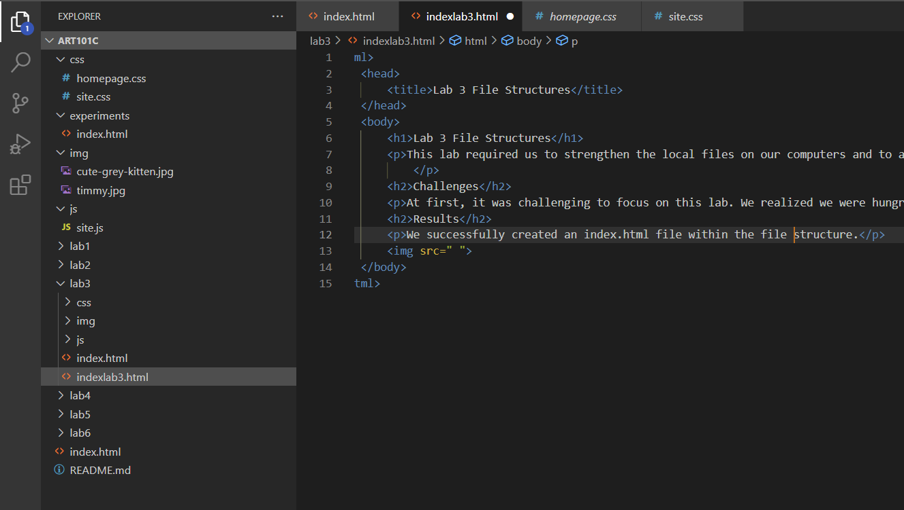

This lab required us to strengthen the local files on our computers and to add index.html files.
At first, it was challenging to focus on this lab. We realized we were hungry and got some food and then we were able to focus. Then some of the images weren't appearing in the browser and we weren't sure why.
We successfully created an index.html file within the file structure.
